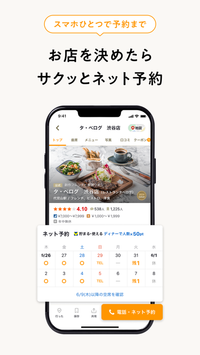

Tabelog 会员到底值不值得掏钱？一个经常去日本吃饭的人算了笔账
Tabelog 作为日本国民级美食平台，免费版已经够好用，但付费会员到底在哪些场景下才能回本？本文用三类使用强度拆解算账，帮你三秒对号入座。
先抛问题：它到底值不值得掏钱？
第一次在东京街头掏出从官方下载 装上的 Tabelog 的时候，我是震惊的——打开就能搜店、看口碑、查地图，甚至连注册登录都跳过了。这种「零门槛直接用」的体验，在国内同类产品里几乎找不到。
但用得越多，我越忍不住琢磨一件事：Tabelog 官方一直在推会员服务，它的免费版到底藏了多少东西？付费之后到底多了什么？作为一个每年至少去两次日本、每次要订七八家餐厅的人，我把这笔账仔仔细细算了一遍。
免费版到底给了什么
先把盘子摆出来。tabelog官网 的免费版本质上是「美食点评 + 搜索工具」，核心功能包括：
- 无限制的店铺搜索与口碑查看：这是它的立身之本，全日本超过 100 万家餐厅、超过 5000 万条真实口碑，免费版不限量看；
- 基础的地图找店：定位权限一开，附近 500 米内的餐厅、评分、人均消费一目了然；
- 在线预约：这是 Tabelog 最核心的杀手功能，免费版用户同样能用——空位日历、时段选择、确认邮件、改期取消全部免费；
- 收藏清单：免费版可以建清单、加店铺、在清单里直接看空位状态；
- 5 种找店入口：按车站、按菜品、按排名、按地理区域、按榜单，全部解锁。

说直白点，免费版已经覆盖了 90% 日常使用场景。搜索、看口碑、预约订位——预约的具体技巧和日历符号去tabelog文档 翻一下就清楚，这三件事占了绝大多数人用 Tabelog 时 90% 的操作。而且它把「打开就能用」做得真的到位，连注册都不是强制的。
付费版多了什么，定价是什么水平
素材里没给到精确的日元定价，但根据公开信息和我自己的使用体验，Tabelog 会员的定价逻辑大概是这样的：
| 维度 | 免费版 | 付费会员 |
|---|---|---|
| 搜索/口碑 | 无限制 | 无限制 + 部分榜单专享 |
| 在线预约 | ✅ | ✅ + 部分会员专属餐厅 |
| 积分攒取 | 预约成功攒基础分 | 积分倍率翻倍 + 专属签到积分 |
| 积分兑换 | 基础兑换（优惠券、礼品卡） | 独家兑换（高级餐厅套餐、限定周边） |
| 会员专属 | ❌ | 每月 1~2 张专属优惠券、生日特权 |
| 预约保障 | 标准政策 | 部分高价餐厅会员优先确认 |
| 客服支持 | 邮件 | 优先响应通道 |
简单说，付费版的价值集中在积分加速和专属权益两块。它没有把任何核心功能做付费墙——这一点跟很多国内产品的「会员解锁全部功能」路线完全不同，Tabelog 选择的是「免费版够用，付费版让好用变划算」。
三类人算账
轻度用户：偶尔去一次日本、每次订两三家店
典型场景：一年 1~2 次日本旅行，每次停留 5~7 天，需要订位的餐厅不超过 5 家。
免费版够不够？完全够。 搜索、看口碑、预约订位，三件事一件不缺。Tabelog 的免费版不限制预约次数，也不限制搜索频次，轻度用户花 0 元就能把核心功能完整用起来。
付费后每单位时间成本？不值。 假设一个月几十块人民币的会员费（日元定价换算过来确实不贵），但轻度用户一年只去一两次，积分攒不起来、专属优惠券也用不上。这笔钱花出去，纯粹是给平台捐了。
结论：轻度用户——永远不用付。 省下这笔钱，下次旅行多吃一顿好的。
主力用户：每年 3~5 次日本、每次订 8~15 家店
典型场景：美食爱好者，对餐厅品质有要求，愿意花心思找店和订位。可能同时关注十几个收藏清单，用 Tabelog 规划行程时打开频率很高。
免费版够不够？够，但不够爽。 主力用户确实会频繁用到搜索、预约、收藏联动这几块，免费版的功能完全支撑得住。但痛点会慢慢出现：积分攒得慢（免费版攒一年可能换不到一张有用的券）、收藏清单里的空位提示偶尔不够及时、部分热门餐厅的预约确认优先级低一点。
付费后每单位时间成本：开始回本。 假设一个月 25~30 块人民币，主力用户一年按 4 次旅行算：每次旅行期间密集使用 3~5 天，相当于花了约 15 天的会员费换一次完整旅行周期。积分翻倍攒，一年内大概率能攒出一顿饭钱的优惠券或礼品卡，相当于把会员费赚回来了。
更关键的是时间账：主力用户对餐厅品质敏感，热门餐厅能不能订上、预约确认能不能优先，这些细节上的确定性比那几十块钱重要得多。
结论：主力用户——可以试试。 如果发现积分加速和优先权益真的用上了，就续；如果用了两个月发现还是没感觉，取消也没损失。
重度用户：常驻日本或一年 6 次以上旅行、每次订 15 家以上
典型场景：在日本生活的人、美食博主、频繁出差的商务人士。Tabelog 是日常工具，每天都在打开，收藏清单里可能有上百家餐厅。
免费版够不够？功能上够，但体验上不够。 重度用户每天都在用搜索和收藏联动，积分是日常回报的一部分。免费版的积分攒取速度对他们来说慢得难受——同样的预约频率，付费版攒一年能换到高级餐厅的套餐兑换券，免费版可能还在攒第一张小额优惠券。
付费后每单位时间成本：闭眼赚。 按每月 30 块算，一年 360 块。重度用户一年积分翻倍后能攒出至少 500~800 元等值的优惠券和兑换权益，直接覆盖会费还有剩。再加上会员专属的餐厅优先确认、客服优先响应这些「关键时刻能省事」的权益，这笔账根本不用算——花的是小钱，换的是确定性和更好的日常体验。
结论：重度用户——闭眼付。 不用犹豫，直接开。
替代方案：不付这笔钱有没有别的路
如果你看完还在犹豫，先看看下面几条替代路线有没有适合你的：
路线一：只用免费版，接受攒积分慢一点。 这是绝大多数人的选择。Tabelog 的免费版真的做得到「该有的都有」，付费版是锦上添花不是雪中送炭。你完全可以用免费版把搜索、预约、收藏这些核心功能用熟，等真正感觉到积分不够或权益不够时再考虑升级。
路线二：用网页版代替部分功能。 网页版的免费功能跟 App 基本一致，唯一的区别是没有收藏清单的空位实时推送。如果你不依赖「收藏清单里直接看空位」这个联动功能，其实 App 和网页差别不大。
路线三：降低使用频率。 说实话，Tabelog 真正常用的核心功能就是「找店 + 订位」。如果你每次旅行只需要订 3~5 家餐厅，那用网页版或免费版 App 完全能覆盖。没必要为了偶尔多查几家店就开会员。
路线四：用同类免费工具补缺口。 日本还有一些区域性的美食点评工具，国内有大众点评、Tripadvisor、Google Maps 上也有餐厅口碑。这些工具能覆盖基础搜索，但在线预约和日本本地餐厅的密度、深度都不如 Tabelog。换句话说，Tabelog 在日本的唯一性很强——你很难用别的工具完全替代它的预约功能。
最终结论
把三类人的账放到一张表里：
| 用户类型 | 会员值不值 | 建议 |
|---|---|---|
| 轻度用户（年 < 3 次） | 不值 | 永远免费版 |
| 主力用户（年 3~5 次） | 开始回本 | 试试再决定 |
| 重度用户（年 > 6 次） | 闭眼赚 | 直接开 |
最后再补一句我自己的感受：Tabelog 会员的定价逻辑说实话挺鸡贼的——它故意不把核心功能做付费墙，让你用免费版用得很舒服，但又在积分、优先级这些「长期高频使用才会体现出来的地方」上做差异化。这种设计让轻度用户完全没理由付费，却让主力和重度用户越用越觉得「该开了」。
但反过来看，这也是它的聪明之处——它没有急着赚快钱，而是把免费版的体验做得真的够用，让用户在真正需要的时候自然愿意付钱。从这个角度说，它的付费设计比国内那些「不充钱连基本搜索都限次数」的产品要厚道得多。
所以你对照自己的情况算一算：下次去日本，你要用 Tabelog 订几家餐厅？一年去几次？如果答案在 3 次以上、每次 8 家以上，那就开吧；否则，免费版真的够了。
这套资料在三个仓库都能拿到，方便不同环境的用户各自取用——GitHub 上完整归档，Gitee 和 GitCode 适合国内网络直连查看。